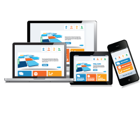
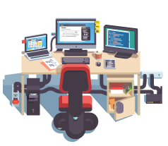

About US
QAX is a professional Quality Assurance and Quality Control team.
IT world evolves very fast, that’s why each of existing companies needs to update its
product
regularly to stay on wave. Winning in competition is really important, so quality of a
product
should be the best! And we will be glad to assist you with this. Years of experience
will
help
us.
Our purpose is to evolve with you! You have a new interesting startup, some
modifications,
updates or re-work, and you are not sure in your product quality - then you’ve come to
the
right
place! Each of our clients and projects won't stay without attention and will be
accurately
verified.
Our specialists are experts with more than 5
years of
experience and great practice. Each of us
has been working for a long period of time in IT product and
outsource
companies.
We are always heads up with all new test
approaches
and worldwide trends in IT development, so we
apply only best practices to our clients.
Product Quality has the highest priority for us. So we do our best to satisfy our сlients
and
customers! During the work we use most popular and effective test approaches and testing
tools,
so verification process becomes really clear and qualitative. As result we achieve
required
quality level in shortest terms.
We are QA team that provides Quality Assurance services
Each our member has 5+ years of QA experience. We can ensure you with qualified QA
support of
your project(s) during full life cycle: starting from requirements acceptance testing,
creating test documentation (test plans, checklists, test cases), and finishing with
product
release testing and post production support.
We have a lot of experience in client testing on desktop and mobile platforms. Besides,
we
can provide a server side testing of the product.
Also, we have a strong experience in performing different types of testing, such as
functional, UI/UX, usability, integration, localization, regression, smoke,
cross-browser/platform etc. In our everyday activity, we use a huge amount of tools
(e.g.
client-server debugging, automation, subversion control systems, continuous integration
tools). Mobile testing is performed on a wide range of devices.
For each test process we can provide comprehensive documentation with clear test results
and
detailed bug reports in required form.
In additional, we have experience in QA process optimization. As result our customers
got
advantages with test time reducing and quality improvement.
Based on our impressive experience, we have found optimal approaches in testing
processes,
and successfully implemented it in our company.
With a great pleasure, we will make your project Better, as we want this World getting
Better!
First of all few words about our team...
QAX was founded by group of professional quality assurance specialists with a goal to go
outside the borders of standard testing processes. In our practice we met a lot of
challenges in testing processes. So we decided to develop new flexible approaches that
are
most convenient for our customers. As result they got more benefits for their business.
We worked in outsource company with all the specifics that this work requires,
including adjustment of time difference and using communication channels like
emails
and skype calls.
In IT product companies we take active part in development process that gave us
deep
knowledge of software life cycle and understanding of different testing
techniques
and methodologies.

We have experience in performing Front-End, Back-End and API testing on desktop
and
mobile.
In our practice, we had effective work with most popular software development
models,
such as Agile / Scrum, Waterfall, etc.
Test design is an important part of each our test process. We have a lot of
experience in creation of test documentation: test plans, checklists or / and
detailed test cases, provided with all necessary information.
We are running daily builds, uploading and maintaining build configuration
settings.

Also, creation of suitable metrics for measuring test progress and evaluating
product
quality is a part of our responsibilities.
Why us
- First of all because of our philosophy. We are proud to be QA’s, it the way we live.
- We have a lot of QA’s with 3 - 12 years of experience, that took positions of QA Team
Leads
and QA managers who have successfully released a lot of products.
- We had a lot of work experience with most popular Agile and Waterfall development
methodologies.
- Our customers no need to worry where to find QA resources, we provide full QA support
during
product lifecycle.
- We can develop and provide to you full test documentation will need.